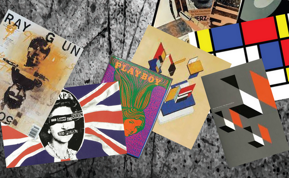

Contextual Studies in Graphic Design

One of the tasks for this unit required a creative journal that captures the main movements of graphic design, starting from its roots and ending with Grunge.
Click this link to access my journal for this unit.
You can also access a group presentation that described the Music Posters and Album Covers in the Psychedelic 1960s era and an essay that I conducted regarding the theme of General Retail .
Journal is of overall good qualit in terms of research as well as ability to interpret the characteristics of the styles and movements. Good work.
You discussed the impact of album covers on graphic design and interactive media well, with a good introduction and interesting points. Context was well-discussed, and examples from graphic design were used. Overall, the work is fair, but there is room for improvement.
Essay is interesting and well researched. Replicas are also well researched and executed with a very good level of independent research overall.